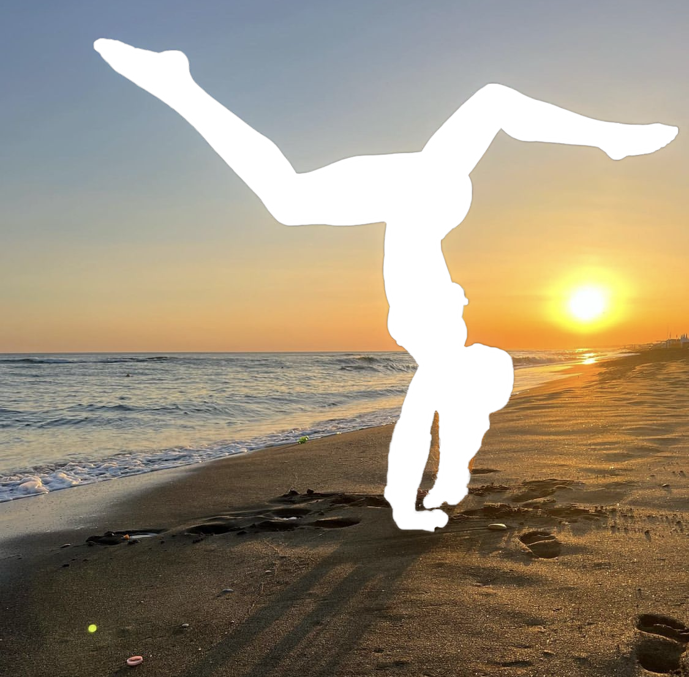

Balance isn’t always being perfect. Balance is being true to yourself everyday.

Let the light in!

The sweet spot between a stretch, a smile and a breath

We were made to move. We were meant to sweat. The key is finding what makes you happiest, and working it into your everyday routine.

Lifted by the ocean. Grounded by the sand.